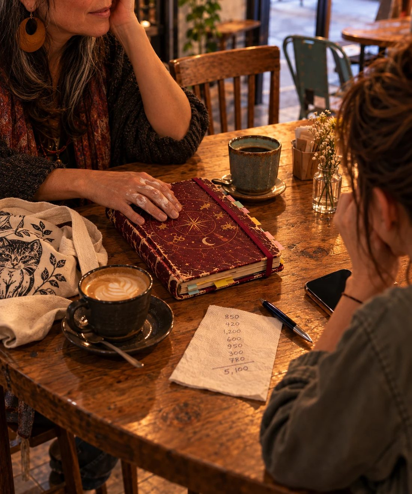
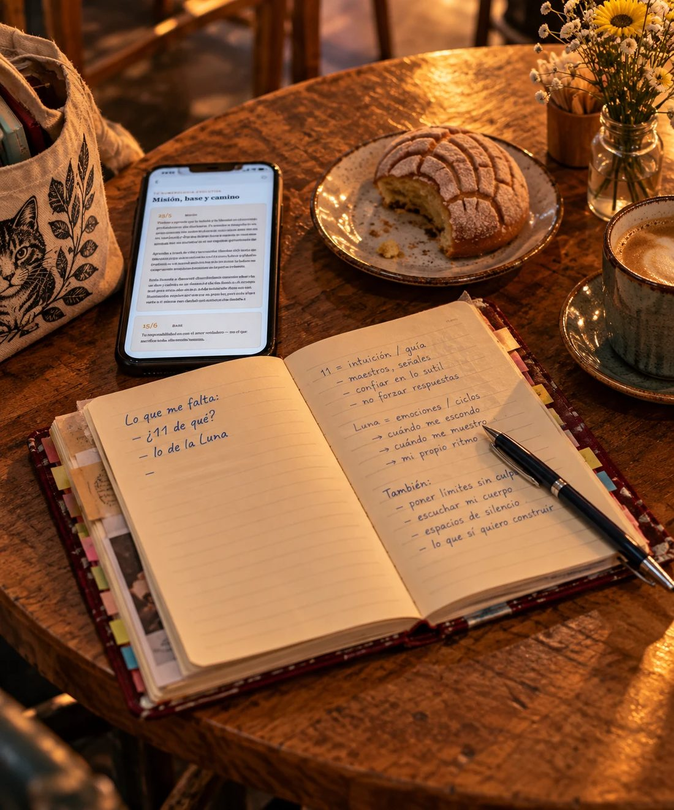

· I ·
El lunes a las ocho y cuarto, Daniela mandó el catálogo.
Cuarenta páginas. Treinta y siete fotos de velas. Tres cuadros grises que decían "foto pendiente", porque el cliente seguía sin mandarlas.
La página doce seguía sin convencerla. El domingo en la noche la movió, la regresó y la volvió a mover. A las ocho y catorce decidió que la página doce iba a quedarse así y que el mundo iba a seguir girando.
Escribió el mensaje y le dio enviar antes de arrepentirse:
Va el catálogo completo. Las tres fotos que faltan ya tienen su espacio, nada más las pego cuando me las mandes 🙂
La respuesta llegó a las nueve y media:
Dani está HERMOSO 😭😭
La 12 es mi favorita
Daniela se quedó viendo el mensaje.
—No puede ser —dijo.
En la tarde, mientras lavaba la taza de las letras chuecas, vibró el celular. La palomita del domingo llevaba horas en azul. Por fin:
Ay mija, sí tengo uno, pero no sé si lo siga usando. Te lo paso, dile que de parte de Leti 👍
Y abajo, un número con lada de Puebla.
· II ·
Escribir el mensaje le tomó más que la portada del catálogo.
Primera versión: "Buenas tardes, mi nombre es Daniela Herrera, soy la nueva inquilina del departamento de la señora Leticia y por medio del presente…" La borró. Parecía carta del banco.
Segunda: "Hola Rosario!! Tengo tu cuaderno 🙂". La borró. Parecía secuestro.
En la tercera escribió "y lo leí" y lo borró. Lo volvió a escribir. Lo borró otra vez. A la cuarta lo dejó, porque era la verdad y porque ya eran las once de la noche.
Hola, Rosario. Soy Daniela, vivo en el departamento que le rentabas a la señora Leti. Encontré tu cuaderno color vino en el clóset del pasillo, atrás de una cobija de tigre. Lo tengo guardado. Te confieso que lo leí. Perdón. Si lo quieres, te lo hago llegar.
Dos palomitas grises.
El martes en la noche se pusieron azules.
Y nada.
El miércoles, nada. Daniela revisaba el celular cada vez que pasaba por la mesa, y en un departamento tan chico pasaba por la mesa todo el tiempo.
Me leyó y no contestó.
Bueno. Tenía derecho a no contestar.
Aunque habría estado bien un "recibido".
Y luego, lavando las tazas, se acordó de la tienda de stickers. De los mensajes de "¿siguen abiertos?" que nunca contestó.
Así se sentía del otro lado.
—Ah, caray —le dijo a la taza.
· III ·
El jueves a las siete cuarenta llegó un audio. Cuarenta segundos.
Daniela lo escuchó parada en la cocina, con la cuchara del café en la mano.
—Hola, Daniela. Perdón, perdón. Vi tu mensaje el martes y me quedé… no sé, me quedé como media hora sentada en la escalera del taller. Yo pensaba que ese cuaderno se había ido en la mudanza, o a la basura, o… Allora… ay, perdón, se me sale el italiano cuando me pongo nerviosa. Este sábado voy a estar en la Ciudad, tengo una feria en la Roma. ¿Te puedo ver? ¿Sigue el café de la esquina, el que está junto al edificio? Ahí escribí medio cuaderno. El de las sillas que no combinan. ¿A las cinco? Y no te preocupes por haberlo leído. Bueno, sí me preocupa un poquito. Pero ya platicamos.
Lo escuchó dos veces.
"Sí, aún está. Nos vemos ahí, a las cinco", contestó.
Y luego:
Las sillas siguen sin combinar.
· IV ·
El sábado llegó al café a las cuatro y media.
Pidió un americano y no se lo tomó. Puso el cuaderno sobre la mesa. Lo guardó en la bolsa. Lo volvió a sacar. Lo acomodó derechito, alineado con la orilla.
Luego lo chuequeó un poco, para que no se viera que lo había acomodado.
Rosario llegó a las cinco y diez, con una bolsa de tela que pesaba más que ella, un mechón gris al frente, unos aretes grandes de barro y los dedos manchados de pegamento.
—¿Daniela?
—¿Rosario?
—Perdón, perdón. Una señora se quiso llevar el cuaderno donde apunto las ventas. Le dije que ese no estaba a la venta y me ofreció cincuenta pesos más.
—¿Y?
—Y aquí estoy, apuntando en una servilleta.
Se sentó. Vio el cuaderno. No lo tocó luego luego; primero puso la mano encima, como quien saluda a un perro que no ha visto en mucho tiempo.
—Está más flaco de lo que me acordaba.
—Se le salieron unas hojas, pero las guardé adentro.
—Te juro que no lo leí por chismosa —dijo Daniela—. Bueno. Al principio sí.
—Está bien. Yo tampoco lo habría devuelto sin leerlo. —Abrió la primera página y la cerró—. ¿Qué tanto leíste?
—Todo.
—¿Todo, todo?
—Hasta las hojas que estaban pegadas.
—Ah, caray. Yo nunca lo leí completo de corrido. Siempre lo abría donde me dolía.
Daniela le preguntó por qué lo había dejado.
—No lo dejé. Se quedó. —Rosario le dio vueltas a su taza—. Me fui en dos semanas, fue… complicado. Lo busqué en todas las cajas. Iba a preguntarle a Leti, y no lo hice.
—¿Por qué?
—Porque si me decía que lo había tirado, no lo quería saber. Y si me decía que lo tenía, iba a tener que ir por él y volver a abrirlo. —Se encogió de hombros—. Y mira, pasaron dos años.
Ninguna de las dos dijo nada por un rato. Rosario le pasó el dedo a la esquina pelada del cuaderno.
—¿Y la cobija del tigre? —preguntó Daniela al fin.
—Esa sí la dejé a propósito.
Las dos se rieron.

· V ·
—Hay algo que no te puse en el mensaje —dijo Daniela—, porque iba a sonar rarísimo.
—Más raro que "encontré tu cuaderno atrás de una cobija de tigre", lo dudo.
—Yo también nací un 6 de julio.
Rosario dejó la taza en el plato.
—¿De qué año?
—Del 94.
Rosario movió los labios, contando.
—Perro.
—Perro. De Madera.
—Yo de Agua.
—Ya sé. Vi la tabla del restaurante.
—Esa tabla me la dieron en el Dragón Dorado de Tlalpan, en 2019. Tiene salsa agridulce. —Se quedó pensando—. ¿Y Cáncer?
—Ascendente Sagitario.
—Ah, bueno. Por lo menos en algo no somos iguales. —La miró con curiosidad—. ¿Y tú cómo sabes tanto? Yo a tu edad pensaba que el ascendente era algo del elevador.
—No sé tanto. Hace una semana tampoco sabía nada. —Daniela se encogió de hombros—. Pero tu cuaderno me dejó con muchas preguntas. Ni siquiera sabía que tenía un animal en el horóscopo chino. Esa noche me puse a buscar, le hablé a mi mamá a las once para preguntarle a qué hora nací…
—¿Y te contestó?
—Con un regaño, pero sí. Y terminé pidiendo mi mapa.
Sacó el celular y se lo pasó.
—Ese es el mío.
La Navegante Reflexiva. El Ermitaño. La lagartija. Rosario iba deslizando la pantalla con un dedo manchado de pegamento, sin decir nada, hasta que se detuvo.
—¿Luna Roja? —repitió.
—Es del Tzolkin, del calendario maya. No lo conocía.
—En 2020 una señora en un retiro me dijo "tú eres Luna". Y se fue a servir el té. —Volvió a ver el celular—. Me pasé dos años buscando qué Luna. En qué signo, en qué casa, en qué fase estaba esa madrugada en Brescia…
—¿Y?
—Luna en Piscis. Nunca me cuadró.
Se quedó callada. Daniela vio que movía los labios, como cuando alguien repite algo para no olvidarlo.
—¿Y yo también seré Roja? —dijo Rosario, más para ella que para Daniela.
Daniela no supo qué contestarle. Le contó, en cambio, lo del 11. Que en su mapa venía un camino de vida y que se le había ocurrido que el 11 de Rosario podía ser eso.
—Puede ser —dijo Rosario—. Yo lo saqué en una página que me dio el número y ya. Esa misma página me dijo que me iba a sacar la lotería.
· VI ·
Daniela tomó aire.
—El domingo casi pido tu mapa donde saqué el mío. Tenía tus datos en la primera página. Nombre, fecha, hora, ciudad. Ya tenía el cursor en el primer campo.
—¿Y?
—Y me sentí rarísima. Como si te estuviera esculcando tu cajón de la ropa interior.
Rosario soltó una carcajada. Dos mesas voltearon.
—Entonces —siguió Daniela—, lo que te quería decir es que te lo quiero regalar. Si quieres. Y si no, también está bien: te doy tu cuaderno, me tomo mi café y ya.
Rosario miró el cuaderno. Luego a Daniela.
—¿Y por qué me lo quieres regalar?
—No sé. Encontré tu cuaderno, lo leí sin permiso y terminé descubriendo cosas de mí que ni siquiera estaba buscando. Supongo que quería darte algo a cambio.
—Pero ya me devolviste el cuaderno.
—Sí, pero me gustaría que encontraras las respuestas a lo que dejaste pendiente en la última página. Si quieres, claro.
Rosario se quedó viendo el celular de Daniela.
—¿Y qué tengo que hacer?
—Poner tus datos. Nombre completo, fecha, hora y lugar de nacimiento. Aunque te sugiero que los pongas tú, para que no me equivoque.
—¿Y cuánto tarda?
—Unos minutos.
—¿Así nomás? Yo tardé tres años y un cuaderno.
Daniela se rio y le acercó el celular.
Rosario escribió despacio, con dos dedos, como quien firma algo.
María Rosario Calderón Gómez. 6 de julio de 1982. 05:07. Brescia, Italia.
Puso su correo y le regresó el celular.
Pidió otro café. Mientras esperaban, Rosario actualizó su correo. Luego otra vez. Y otra.
Daniela reconoció el gesto. No dijo nada.
· VII ·
El correo llegó a las seis menos diez.
Rosario abrió el PDF en su celular y leyó la primera página en silencio. Daniela se levantó a pedir una concha que no quería, para dejarla leer sola.
Cuando regresó, Rosario tenía los ojos húmedos y le echaba la culpa al vapor del café.
—¿Todo bien?
—Sí. Es que dice cosas que yo escribí. Pero ordenadas.
Fueron página por página. Rosario volteaba el celular para enseñarle lo que quería y lo volvía a voltear cuando no.
Tarot: Los Amantes.
Rosario no dijo nada. Nomás sonrió, como quien ya lo sabía. "Enero 2022, por fin", pensó Daniela.
Luego, el Tzolkin.
Luna Roja Solar. Kin 9.
Daniela acercó su silla para mirar la pantalla.
—Entonces sí era la misma Luna.
—Parece que sí.
—Oye, ¿y qué es eso de Solar? —preguntó Daniela—. El mío dice Galáctica y yo nomás pensé que se oía bonito.
Rosario bajó en la pantalla.
—Aquí dice que hay trece tonos. Que es como… el modo en que cada quien lleva su Luna.
—¿Y el tuyo?
—Solar. Intención. —Leyó un poco más—. "Lo que se propone, lo termina." —Levantó la vista—. Dice "termina".
—No te rías.
—No me río. Me acuerdo de un cuaderno que no terminé.
—¿Y el mío?
Rosario buscó en el celular de Daniela.
—Galáctico. Armonía. "Necesita que lo de adentro y lo de afuera coincidan."
Daniela pensó en la mesa del comedor. En la lámpara que movió dos veces antes de poder sentarse.
—Ah, caray.
—Dos años buscando la Luna en el cielo —dijo Rosario—, y estaba en el calendario.
Sacó una pluma de la bolsa de tela, abrió el cuaderno vino en la última página y, junto a "lo de la Luna", escribió con letra chiquita: Luna Roja · Kin 9.
Después, el ángel.
—Nelchael —leyó Rosario—. "Mi mente es una herramienta, no una prisión." —Hizo una mueca—. Eso debería venir impreso en una taza.
—¡Eso mismo dije yo!
—¿Tienes el mismo ángel?
—¡Sí! ¡Ja, ja! —se rio Daniela—. Van por fechas, de cinco en cinco días. Nacimos el mismo día, nos tocó el mismo. No es que el universo nos haya juntado. —Le dio un trago al café—. Nos juntó la señora Leti.
—Y una cobija de tigre.
—Y una cobija de tigre.
Al final, la numerología. Rosario buscó el camino de vida: 11.
Se quedó viendo el número un rato.
—Era mi camino —dijo bajito.
—Tenías el número desde el principio —dijo Daniela—. Nomás te faltaba saber de qué.
—Y me pasé años preguntándome "¿11 de qué?". —Se rio, pero sin ganas.
Abrió el cuaderno y, junto a "¿11 de qué?", escribió: de mi camino.

· VIII ·
Quedaba un renglón.
—¿Y el tercer guion? —preguntó Daniela.
Rosario miró la página.
—Ah. Ese.
—¿Qué ibas a poner?
—Lo dejé para la siguiente pregunta. Siempre había una siguiente. —Le pasó el dedo al guion vacío—. En agosto del 22 abrí el cuaderno para apuntar algo. Me quedé ahí con la pluma en la mano. Tenía un montón de cosas escritas y ninguna pregunta nueva.
—¿Y?
—Pues nada. Cerré el cuaderno. Al mes siguiente me fui a Cholula.
—¿A qué?
—A poner un taller.
—¿De qué?
Rosario metió la mano en la bolsa de tela y sacó un cuaderno. Pasta dura, cosido a mano, con elástico nuevo.
—De cuadernos.
Daniela se tapó la boca para no reírse.
—Ya sé —dijo Rosario—. La ironía no se me escapa.
Daniela se quedó viendo el cuaderno nuevo. Luego, sin planearlo, le contó lo de los tres trabajos, el curso de lettering en el módulo cuatro, la tienda de stickers que un día ya no abrió.
—Yo no termino nada —dijo.
Rosario miró el cuaderno vino.
—Ese tampoco lo terminé.
—Pero pusiste un taller.
—Sí. Y hay días que quisiera cerrarlo y dedicarme a otra cosa.
—¿En serio?
—Sobre todo cuando tengo que hacer cuentas.
Daniela se rio. Rosario también.
Rosario le acercó el cuaderno nuevo. Era color mostaza.
—Es el único que me queda.
—¿Mostaza?
—¿Qué tiene?
—Nada. Tengo un sillón de ese color.
—¿El sillón de Leti? Lo odiaba.
—Yo también.
—No lo tienes que llenar, ¿eh? —dijo Rosario—. No te lo doy de tarea. Úsalo para lo que quieras. Para la lista del súper, si quieres.
Afuera ya estaba oscuro. Rosario guardó el cuaderno vino en la bolsa, entre sus cosas y se paró.
En la puerta del café la abrazó, rápido, como se abraza a una prima que no ves seguido.
—La próxima me cuentas qué hiciste con el tuyo.
—¿Con mi cuaderno?
—Con tu mapa. Si descubriste algo más. Y también con el cuaderno si quieres.
· IX ·
El domingo en la tarde, Daniela se sentó a la mesa. A su mesa.
El cuaderno mostaza estaba en el centro, donde una semana antes había estado el de Rosario. No lo abrió luego luego.
Primero vibró el celular.
Mija, ¿y qué pasó? ¿Sí la encontraste?
Sí, señora Leti, ayer nos vimos. Le mandó muchos saludos.
Ay qué bueno 🙏 Oye y entonces, ¿te quedas el año o qué? Para ver lo del contrato
Daniela miró alrededor. El sillón mostaza, que seguía sin ser suyo. Las revistas en pila. La taza chueca. La pestaña de departamentos en renta, que no había vuelto a abrir desde el viernes.
Me quedo, señora Leti.
Luego hizo algo que llevaba dos años sin hacer: abrió la cuenta de la tienda de stickers.
La última publicación era de hacía dos años. Abajo, tres comentarios de "¿siguen abiertos?" sin contestar.
Escribió un post. Lo reescribió cuatro veces. Publicó la segunda versión, que no era la mejor, pero era la que sonaba a ella:
Hace dos años dejé de publicar y cerré la tienda sin avisar. Hubo personas que me escribieron y nunca les contesté. Perdón por eso. No sé si voy a volver, pero quería dejar de hacer como si esta cuenta no hubiera existido.
Puso el celular bocabajo.
Lo volteó a los diez segundos.
Un corazón. Luego otro. Luego un comentario:
¿o sea que ya no hay del gatito con aguacate? 😿
Daniela se rio sola en el comedor. No contestó que sí. Tampoco que no.
"Déjame ver 🥑", escribió.
Después le marcó a su hermana.
—¿Ahora sí me vas a contar? —contestó su hermana, sin saludar.
—Es largo.
—Tengo tiempo. Tu sobrino ya se durmió.
Y le contó. Lo del clóset, el cuaderno de Rosario, la coincidencia de los cumpleaños y el mapa que terminó comprando para ella misma. También le habló del encuentro en el café y de cómo habían encontrado las respuestas que Rosario llevaba años buscando.
—O sea que encontraste un cuaderno y terminaste conociendo a la dueña.
—Y comprando dos mapas.
—Eso sí suena a ti.
Daniela se rio.
—Oye, pero hubo cosas que me hicieron pensar.
—¿Como cuáles?
—Lo de la tienda, por ejemplo. Que la cerré y ni siquiera avisé. Hoy volví a entrar a la cuenta.
—¿En serio? ¿La vas a abrir otra vez?
—No sé. Por ahora solo contesté un mensaje.
—Bueno, por algo se empieza.
—Era alguien preguntando por el gatito con aguacate.
—¡Ese estaba buenísimo! ¿Todavía tienes?
—No sé. Tengo que buscar.
—Pues busca, porque yo quiero uno.
· X ·
Colgó y abrió el cuaderno mostaza.
Sacó del estuche sus plumones de lettering, que no habían salido desde dos mudanzas atrás. Uno estaba seco. Los otros no.
En la primera página escribió, con letra bonita, sin prisa:
Daniela Sofía Herrera Lomelí
6 de julio de 1994
17:20
Ciudad de México
Abajo iba a poner "Mi archivo natal". No lo puso. Eso era de Rosario.
Escribió otra cosa:
Lo que me falta:
Se quedó viéndolo. Lo tachó. Una sola raya, sin romper el papel.
Encima escribió:
Lo que sigue:
—
Y se quedó viendo el guion.
Podía llenarlo. Se le ocurrían varias cosas: el gatito con aguacate, el módulo cinco, la página doce, que seguía sin convencerla.
Miró el renglón vacío. Esta vez no le molestó dejarlo así.
Cerró el cuaderno y lo dejó en la mesa, junto a la laptop. Mañana era lunes y tenía tres fotos de velas pendientes.